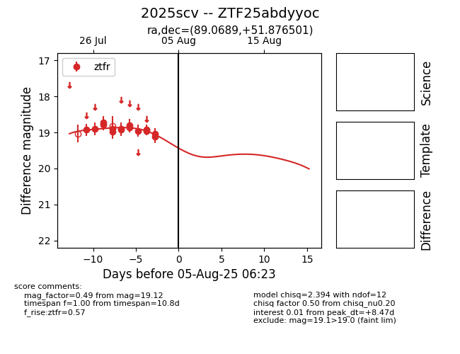

Target 2025scv at 2025-08-05 07:33, see:
FINK: fink-portal.org/2025scv
Lasair: lasair-ztf.lsst.ac.uk/objects/2025scv
ALeRCE: alerce.online/object/2025scv
TNS: wis-tns.org/object/2025scv
YSE: ziggy.ucolick.org/yse/transient_detail/2025scv
alt names
ZTF25abdyyoc (ztf,fink)
2025scv (tns,yse)
coordinates:
equatorial (ra, dec) = (89.0689,+51.87650)
galactic (l, b) = (160.9379,+13.16416)
photometry
last ztfr=19.12
15 ztfr detections
